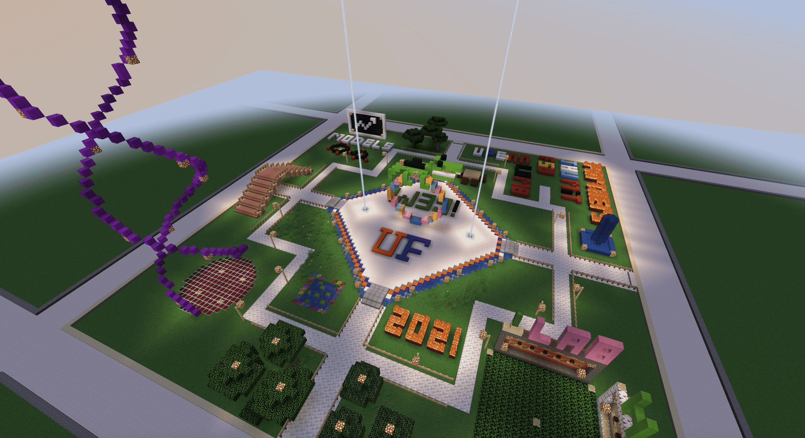
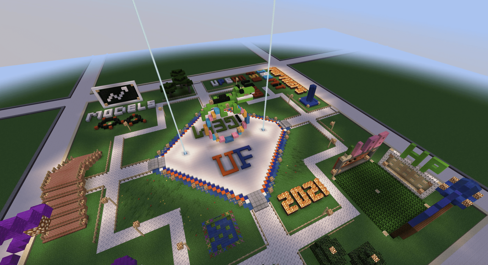
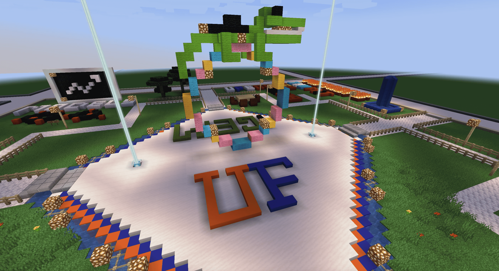
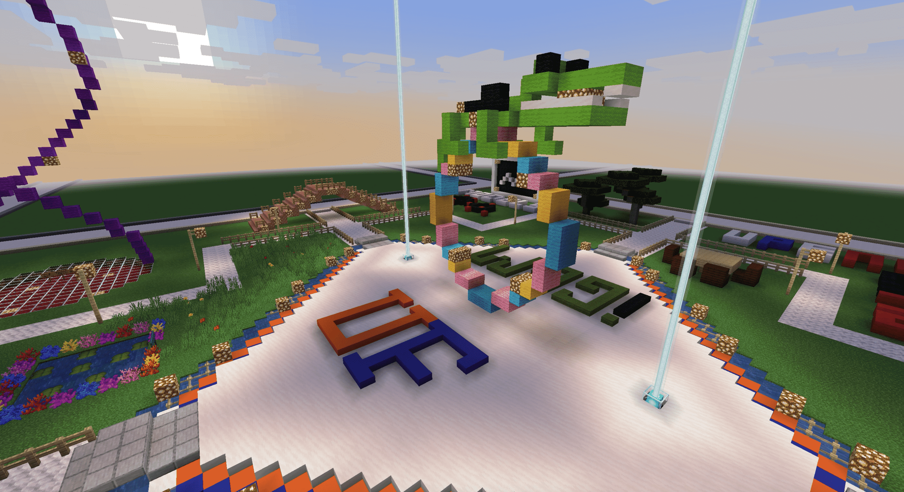
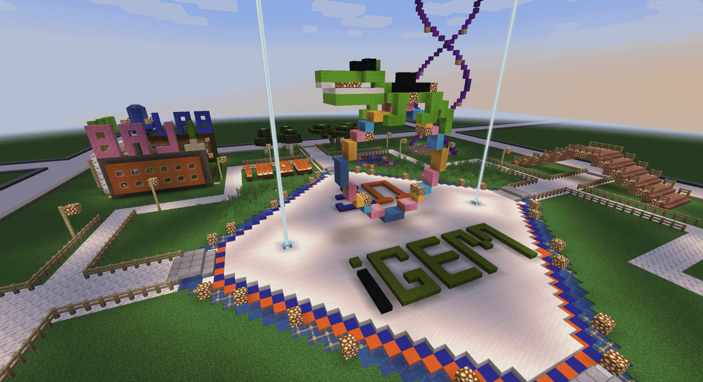
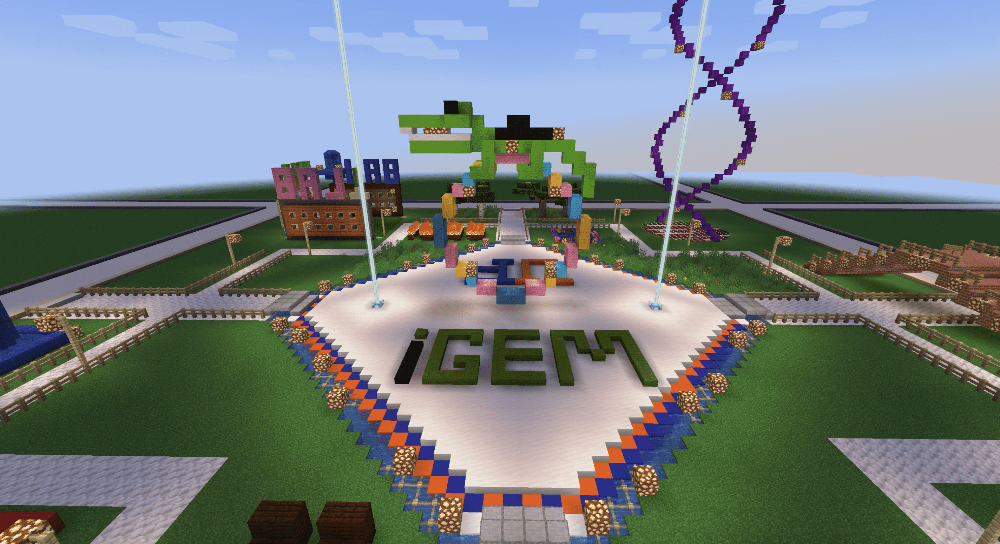
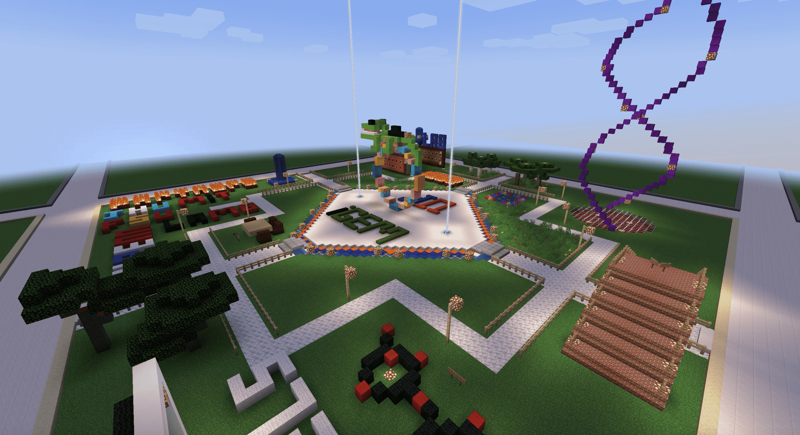
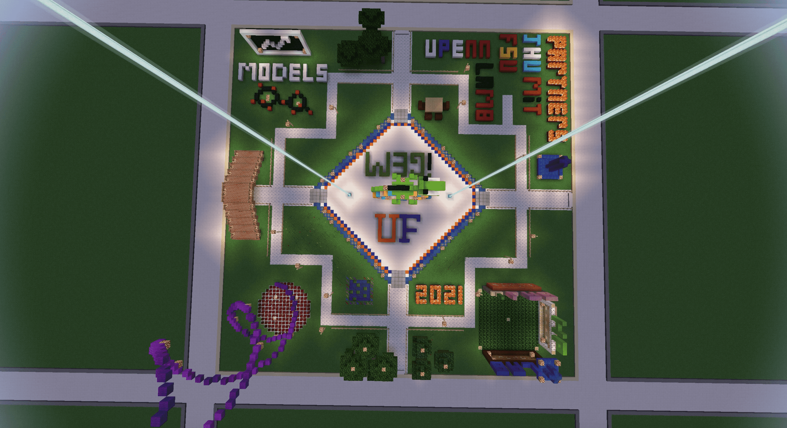
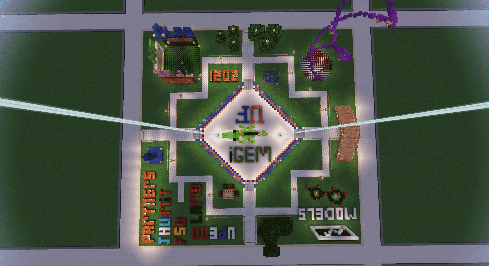

Why We Partner
What do we have to gain from partnering with other teams? The answer, of course, is everything. Initially, team FSU reached out to us with hopes of initiating a collaboration alongside the Johns Hopkins University (JHU) iGEM team. Throughout our first few meetings early this summer, we learned about each other's projects, their missions, and what each of our teams could contribute. With time, however, we saw potential for something greater. What started as a simple, three-way collaboration blossomed into a network of iGEM teams with a diverse array of plans and ideas. Upon addition of the University of Pennsylvania, MIT, and Lambert High School iGEM teams to our “Eastern Seaboard” partnership, we have found new and innovative ways for us to not only assist one another with our projects, but also spread awareness about the iGEM competition.
Click on a pin to learn more!
Florida State University
At first, team FSU reached out to us via social media, expressing how they were facing some difficulties with their project, while also remaining cognizant of the fact that other teams may be facing similar obstacles. To mitigate this, they proposed we initiate a partnership with other iGEM teams in hopes of learning from one another and improving our projects. Throughout our initial meetings, team FSU provided the teams of the partnership with an array of entrepreneur and fundraising ideas for us to potentially integrate into our projects. One such example that stood out to us was the development of an informational pamphlet that could be distributed to sponsors and organizations we collaborated with. As a matter of fact, our team drew inspiration from team FSU’s informational pamphlet and customized it in a way that succinctly described our project’s mission and methodology. This enabled our team to distribute the pamphlets we created to organizations such as St. Francis House, allowing them to learn more about iGEM and what our team has been working on.
Johns Hopkins University
One of the principal aspects of each of our partnership meetings consisted of thoroughly dissecting each of the medal components. As we jumped from one component to the other, teams would discuss where they felt they were lacking or where they felt confident. Particularly, Team Hopkins requested if the other teams could provide them with guidance on how to get more involved with their community. We spoke to Team Hopkins about the ways in which we’ve gotten involved with the local Gainesville area, including our presentations for the Florida Sea Grant and the meals we made for homeless individuals at the St. Francis house. These descriptions provided Team Hopkins with a foundation from which to design and execute their service/outreach projects throughout the remainder of the competition period. In addition, our team was able to provide Team Hopkins with a detailed guide on how to design their Gibson Assembly protocol, as well as the target concentrations of reagents for a proper assembly.
Massachusetts Institute of Technology

Team MiT expressed how they were seeking to integrate more educationally-inclined activities into the Human Practices component of their project. Seeing as how our team had recently been involved in educational projects, such as the UF Rise presentation, we provided them with guidelines on how to present information on synthetic biology to groups of varying age demographics. In fact, we placed emphasis on the notion that synthetic biology is a subject that can be successfully explained to individuals of any age group, as long as it is delivered correctly. Namely, we explained to them how their method of delivery was a crucial factor for an audience’s interpretation and retainment of the information presented to them.
Lambert High School
Once Team Lambert came on board with our ongoing partnership, they proved themselves to be a
powerhouse of an iGEM team. In one of our meetings, we expressed feelings of ambiguity
regarding our interpretation of the distinctions between the Human Practices and Integrated
Human Practices medal requirements. Team Lambert took their time to explain what they
understood each medal requirement encompasses, and how to clearly draw the line between the
two. With their advice, we ensured to place emphasis on how antibiotic resistance is tied to
the social sciences and the impact it can have on local communities.
Furthermore, Team
Lambert provided our team with valuable advice regarding the logistics of our wiki design.
After Team Hopkins stated they were developing their wiki through a platform other than the
one on the iGEM site, Team Lambert stepped in and warned us about the possible technical
issues we may encounter as we transfer our source code from a third-party software to the
iGEM website. Seeing as how this was something our team was doing, we quickly contacted our
wiki design team and commented on the logistical issues they may arise. To prevent this, our
wiki team ensured to have the preparations completed early on.
Minecraft
One of the components we are most ambitious about with this partnership is the creation of an inter-institutional Minecraft (MC) server. This project, facilitated by the Team Hopkins’ server administration, enabled multiple iGEM teams to showcase their projects and iGEM’s mission in various plots of land granted to each team. Teams spent four weeks bringing their projects to life (digitally), in hopes of inspiring non-iGEM members to become part of their local institution’s team and contribute to the global efforts occurring each year. Within our specific plot of land, we developed a “city” design that would take players on an adventure consisting of our iGEM project. As players wandered through our cityscape, they were met with creative designs such as giant DNA double-helices, Team UFlorida’s hall of fame, and decorative segments aimed at portraying the work our Human Practices team has accomplished.
- 
- 
- 
- 
- 
- 
- 
- 
- 